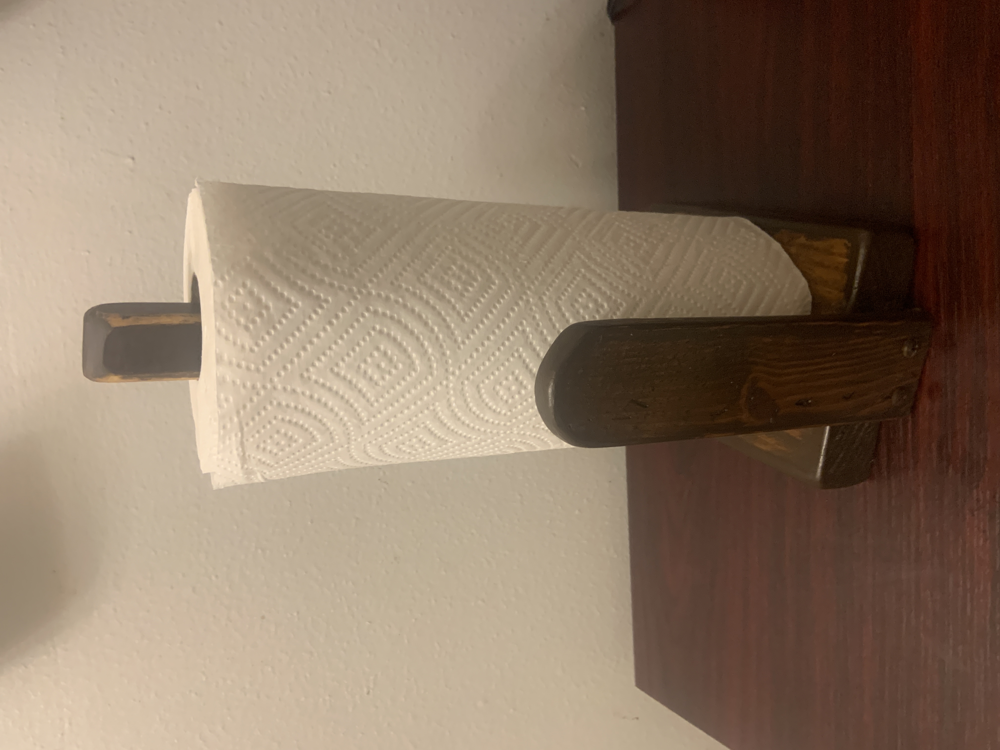

This paper towel holder was one of the first pieces I created after my accident and marked my return to woodworking. It was made using reclaimed Pinewood from the same broken bedframe used in later projects.
The wood was cut by hand using a hand saw. After shaping and sanding, the piece was finished with a walnut stain to bring out the natural grain.
This project represents an important milestone for me. It was my first woodworking project since the accident and the piece that reminded me how meaningful it is to create something with your hands.
